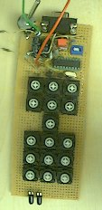

|
Mindstorms & PICs
RCX remote control
Stef Mientki
23 december 2001 |
|
Inspired by some applications of the 16F84
PIC, we came up with the idea to make a IR-module, which is capable of
doing all the InfraRed tasks we could imagine with the RCX.
Until now we've build a RCX remote control
unit, with some advantages over the standard Lego remote control.
A lot of time was spent in selecting /
developing the right tools to control the PICs. Having the right tools
and understanding them, you can quiet easy and very fast create all kinds
of electronics with PICs (not only for the RCX). Still remains, using PICs
is not for beginners in electronics, you need to have some knowhow of electronics
to read the manuals (some IO-pins are quiet complex) and some experience
in programming (for instance a language like NQC).
ERATTA: in the version before 23-12-2001, the program data and clock
lines on the PIC were exchanged.
Advantages
over the Lego remote control 
-
Motor control is done by immediate commands
instead of remote commands, so pushing a key ones, keeps the motor running.
But by changing the software you can do it the Lego-way.
-
There are 2 potmeters added to control the
speed of the motors (A+C and B, but by changing the software you can choose
other combinations or even go upto 4 potmeters)
-
The device is re-programmable by a simple
programmer (which even can be build in the remote controller)
-
A lot of other things can be done with the
same hardware, see future posibilities
Disadvantages
-
You have to build it yourself
Future
Posibilities
By (almost) no hardware extensions, just
by downloading other software you can give the device more and / or other
functionality.
-
Using it as a serial IR-tower to program /
control / read the RCX . Maybe it's even possible to connect both standard
IR tower and the device decribed here to the same serial port for a widther
range.
-
Infrared repeater, to enlarge the transmission
region
-
RCX responder, a stand alone device capable
of detecting RCX-messages and responding with another RCX-message
-
Shooting target, with 2 or more (visible?)
light diodes produce a beep when the target is hit
-
Infrared buoy, which sometimes sends IR signals,
so the RCX must try to locate the buoy
-
Receiving and decoding IR signals from audio
/ video remote controls
-
Encoder and transmittor for audio / video
remote IR-signals (so your PC can control audio and video equipment)
-
Connected as an sensor to the RCX, so on the
one hand the RCX can control audio and video systems and on the other hand
the RCX can react on standard remote control units
Some
Real life Pictures

The total remote control. As you can see
I haven't found a good enclosure for it. Also I'm looking for a good place
for the potmeters.
|

The electronics around the PIC, including
fast serial port and NOP programmer. Take some more space than I used,
otherwise testing is quiet difficult. |

The matrix diodes are placed on the backside.
|
| Hardware
The circuit on the right shows the basic
remote control.
The lines going out of the diagram can
be omitted, they are for other devices like the programmer, fast serial
communication and IR-receiver. Before you decide to build this circuit,
look at those extra interfaces first, because they can be added by almost
no extra energy and costs.
D11 and R6 should not be mounted if you
include the programmer in the circuit.
D20 has 2 functions, protecting the circuit
against the wrong polarity. The second function (only if programmer is
included) is to prevent current flowing through the zenerdiode D7 (see
programmer)
D12 and D13 are of course the IR-leds. |
|
| Key
codes
The keycodes depends on the physical layout
of the key and diode placing.
I found it quiet difficult to give the
exact schematic without errors.
Therefore a more convenient way is to
mount the keys and diodes and run the program with the serial debugger,
and you'll find the right key codes. |
 |
The
JAL files in the project
| RCX_Remote |
The main program, see below |
| 16F628_inc |
a file containing the pic definitions,
automatically generated from the microchip INC-file. |
| indf_bits |
a number of routines written by Javier
Martínez (thanks to Javi) to address higher banks |
| rs232_hw |
library that contains RS232 routines (it's
just a start) |
| scan_matrix |
library to scan extended key matrices |
| scan_pots |
library to scan potmeters |
| 16F628_spec |
library, containing all the special control
functions of this type of PIC (just a start) |
| RCX |
library wich contains all RCX constants
and routines to send RCX IR-signals (receiving routines still to come) |
A more extended decription of the library
files can be found here. |
|
| The
main program: RCX_remote1
On the right is the start of the main program.
If you're familiar with NQC, you can see
the close resmblance.
The first key that is decoded, results
in a motor command, which is not done as a remote command but as a normal
immediate command, therfore it's somewhat more complicated than the other
(remote) commands, shown below.
For JAL and JALcc, start
here. |
 |
Hardware
extra's
| IR
-receiver
Isn't this simple, so at least keep room
for it.
|
The
NOP programmer
See for more information
programmer
hardware
 |
| Fast
Serial Interface
The advantage of a fast serial port for
debugging is that it hardly affects the speed of the program to be tested
and it can be very fast, so a lot of information can be transfered.
You'll also need the fast serial port if
you want to transmit IR signals form an audio/video IR-remote to your PC.
The uart output of the 16F628 is inverted.
Although it's possible to invert the transmit signal by only one transistor,
it has the disadvantage that such a one transistor design will consume
a lot of power even when no RS232 connector is connected and the circuit
is supplied from a battery.
So this circuit is designed to invert the
transmit signal with a minimum of power lost. |
|
All
the schematics together
Here the full blown circuit with all the
extra's I've build,
.... and still there are IO-pins free
for potmeters or other devices.

(click to enlarge)